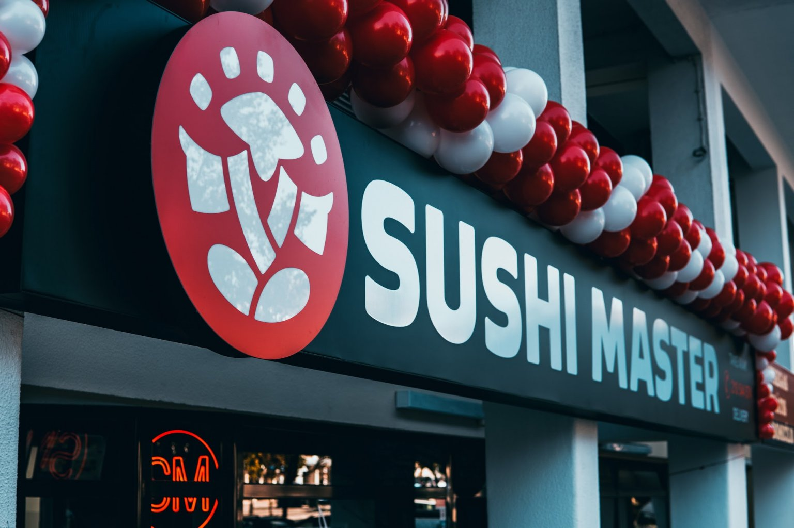

Доставка суші в Києві від "Sushi Master": смачніше і швидше бути не може!
Кожен раз, коли хтось замовляє суші або роли, кількість щасливих людей у світі збільшується. Стати щасливим легко — замовте суші в Києві.Sushi Master – доставка їжі по Києву. У нашому меню є не тільки смачні суші й роли, але й інші страви японської та паназійської кухні.

Висока якість страв. Ми використовуємо тільки свіжі інгредієнти від перевірених постачальників, і не зберігаємо їх в холодильнику, а відразу починаємо готувати;
Великі порції. У Києві ви можете замовити суші як для тихої зустрічі, так і для великої компанії;
Наявність відкритої кухні;
Наявність акцій і знижок;
Кваліфікований персонал;
Можливість зробити попереднє замовлення;
Оперативна доставка (протягом 1 години).